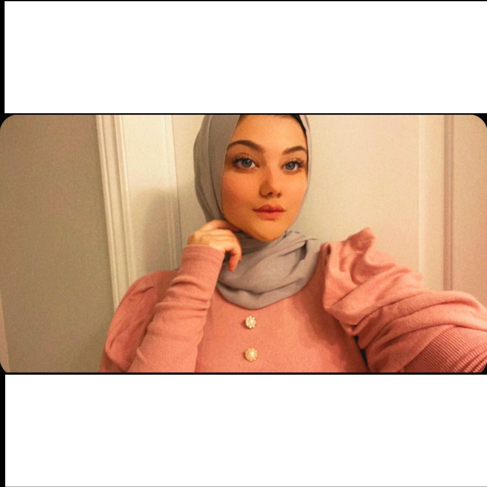

About Me
I believe that everyone has a goal, experiences and a dream job. My name is Rand Fakhoury, and I am 19 years old from Jordan.I grew up in Oman, Muscat, for 18 years In 2019 I came to Canada to study the program Interactive Media Design (IMD). In conclusion, people should always achieve their goals in life. I am optimistic that I will accomplish many purposes in the next 5 years The program consisted of many fields, such as photography, design, coding and (etc..). My hobby is to take photos and draw some art, such as nature and animation. My dream job is to work in a big company, such as Adobe and another company. In conclusion, people should always achieve their goals in life. I am optimistic that I will accomplish many purposes in the next 5 years.
"I like carts"-Rand F.